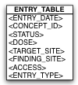

This is the object model to relational model mapping structure where all classes in
an inheritance hierarchy are mapped to a single table.
The following are the salient features of this mapping
strategy.
- This strategy chooses to implement a single table for the entire inherited
class hierarchy. o This table has columns that include all the attributes of all
the classes in the hierarchy.
- The entries against each class are differentiated by a ‘discriminator’ saved
into a column against each entry within this unified table.
- This approach has the advantage that there is a single denormalised table
against which all queries are run.
- This avoids the need to use joins across multiple tables that are known
to be computationally intensive in a RDBMS.
- Schema evolution is simple.
- Denormalised tables have the following disadvantages
- Columns within the single table need to be ‘nullable’ for entities that
might otherwise have ‘non nullable’ properties.
- Not always the best way to optimise performance
Data retrieval against this schema is simple. For example, in the
figure shown, in order to retrieve all patients who had a procedure that happened on a
given date, we would perform the following query.
- SELECT PATIENT_ID FROM SINGLE_PROCEDURES_TABLE WHERE PROCEDURE_DATE = ?
In order to extract patients for whom a Medication was administered on a given
date, the SQL would be something like
- SELECT PATIENT_ID FROM SINGLE_PROCEDURES_TABLE WHERE DISCRIMINATOR_TYPE =
‘medication’ AND PROCEDURE_DATE = ?
